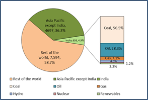
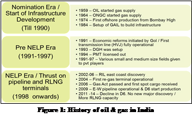
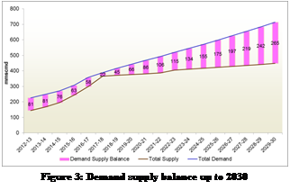
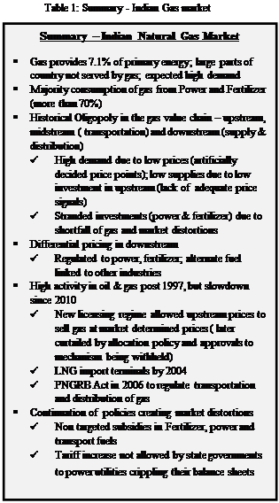

Paper Title :
STATE OF NATURAL GAS SECTOR IN INDIA
POLICY INTERVENTIONS FOR DEVELOPMENT OF AN EFFICIENT GAS MARKET
Abstract
Energy availability and accessibility, is key for growth and development of any country. India does not produce sufficient energy to meet its demand. Moreover, a large part of India does not have the basic infrastructure to transport energy. India, the fourth largest energy consumer in the world plans to meet part of its energy requirement by increasing the share of gas in the energy mix to 20% (current 7.1%) by 2030. This would require reforms, in the gas sector, to correct the inherent structural and policy issues, thereby enabling the required flow of capital. India started with sincerity on the reform path post 1991 in all sectors including energy, but market distortions continue, including lack of transparency, market monopoly and monopsony powers. Literature review is carried out to study the evolution of gas markets in various countries. Study of US and UK markets provide important learnings for India to move to a fully developed efficient market stage. As a minimum India needs to focus on development of infrastructure, deregulate gas price at the wellhead, break monopoly power, gradually reducing monopsony and introducing transparency.
Authors
Akhil Mehrotra,
Research Scholar,
UPES,
Dehradun, India
Dr Anshuman Gupta,
Professor,
UPES,
Dehradun, India
Dr Krishan K Pandey
Senior Associate Professor
UPES,
Dehardun, India
Paper Transcript of Paper Titled :
STATE OF NATURAL GAS SECTOR IN INDIA
POLICY INTERVENTIONS FOR DEVELOPMENT OF AN EFFICIENT GAS MARKET
State of Natural Gas Sector in India
Policy interventions for development of an efficient gas market
Akhil Mehrotra
Research Scholar
UPES,
Dehradun, India
Dr Anshuman Gupta
Professor
UPES,
Dehradun, India
Dr Krishan K Pandey
Senior Associate Professor
UPES,
Dehardun, India
Abstract - Energy availability and accessibility, is key for growth and development of any country. India does not produce sufficient energy to meet its demand. Moreover, a large part of India does not have the basic infrastructure to transport energy. India, the fourth largest energy consumer in the world plans to meet part of its energy requirement by increasing the share of gas in the energy mix to 20% (current 7.1%) by 2030. This would require reforms, in the gas sector, to correct the inherent structural and policy issues, thereby enabling the required flow of capital. India started with sincerity on the reform path post 1991 in all sectors including energy, but market distortions continue, including lack of transparency, market monopoly and monopsony powers. Literature review is carried out to study the evolution of gas markets in various countries. Study of US and UK markets provide important learnings for India to move to a fully developed efficient market stage. As a minimum India needs to focus on development of infrastructure, deregulate gas price at the wellhead, break monopoly power, gradually reducing monopsony and introducing transparency.
Key Words: Natural Gas; Efficient; gas market; evolution; reforms; policy interventions
- Introduction
The growth in primary energy consumption of India, for the year 2014 over 2013 is 7.1%. This is considerably higher compared to the world average, growth rate of 0.9%. (BP, 2015). Availability of natural gas, as an energy source is vital to meet this growing energy need for India. However, the measures undertaken by the Government of India to meet the growing energy demand in the past few years, have not resulted in any substantial increase in energy availability, to its 1.2 billion people (Census 2011). One of the potential means to resolve India’s growing energy needs is to provide an enabling environment for the energy sector, in order to attract investment, and increase availability and accessibility of energy. This paper, attempts to establish the policy interventions required for development of an efficient gas market in India, to help increase energy availability and accessibility. The paper also provides recommendation on gaps, in the existing policy and regulations, for development of such market. In the second section the paper provides a comprehensive understanding of the current status of gas markets in India, followed with
establishing the need for development of an efficient gas market in the third section. The fourth section evaluates international gas markets of the US and the UK, capturing key learning’s and bringing out the structural and policy gaps in the Indian gas market. The conclusion and the recommendation on the policy enablers and the interventions required, for the gas sector in India are provided in the last section.
- Status of natural gas market in India
- Background
The primary energy consumption of the world in the year 2014 was 12,928 Million tonnes of oil equivalent (Mtoe). Asia Pacific consumed 5334Mtoe of energy, of which India’s contribution was 638Mtoe. Top five nations (China, US, Russia, India and Japan), consumed 54% of the total primary energy consumed in the world. India retained its position as the fourth largest primary energy consumer in the world (after China, US and Russia) accounting for 4.9% of the world consumption. Oil & gas in India constitute 35.4% (28.3% oil & 7.1% gas) of the India’s primary energy consumption (BP, 2015) (Figure 1). The energy demand in India is expected to grow at 6% with the targeted GDP growth rate of 9%. The share of gas in the primary energy mix is projected to grow, to at least 20% by the year 2030 ([MoPNG(GoI)], 2013).The current world average of gas in the primary energy mix stood at 23.6%.

Figure 1: World Primary energy consumption
India has 0.8% of the proven gas reserves of the world. The current production of gas in India is just 0.9% of the total world production at around 39.7 Billion cubic meters (Bcm) while it consumes around 50.6 Bcm of gas, which is circa 1.5 % of the total world consumption. The average production of gas has declined 5.9% in the last one year. This is due to the continued drop in the production from the KGD6 field (east coast of India) and no new production coming on-stream. India (5.7%) is the fourth largest importer of LNG after Japan (36.2%), South Korea (15.3%) and China (8.1%). Asia remained the key market for LNG trade consuming circa 73% of the world LNG supply while Qatar retained its position as the largest supplier contributing 31% of the world LNG (BP, 2015).
India consumes more energy than it produces. The oil import bill for the year 2012-13 was $143.8 bn. (GoI, 2013). India is the third largest oil importer after US and China. While India has an estimated sedimentary area of 3.14 million Sqkm, comprising of 26 sedimentary basins, an area of 1.5 million sqkm has so far been awarded under the NELP, which works out to almost 48% of the total sedimentary area in the country. (GoI, 2014). However a large part of the above sedimentary area is already relinquished by the operators (106 blocks out of 254 awarded so far) due to a number of reasons. Further, production has started in just 3 blocks and major gas discoveries have been mired with litigations and controversies. Focus, on domestic production would, not only help ease the burden of high import bill but also ensure energy availability and security for the 1.2 billion population, the biggest challenge in front of the nation. India has a low per capita consumption of energy of 0.5toe as against the world average of 1.8toe. The 13th plan document of government of India envisages more than doubling of the per capita energy consumption in India to 1.2toe by 2030. Also it envisages an investment potential of more than $45bn in the midstream and downstream segments of the gas chain to meet the increasing demand.
Natural gas therefore, is positioned to play a bigger role in the Indian energy mix (20% target by 2030) and would be a factor in the economic growth of the country. To achieve this, government of India needs to attract higher investment in the gas sector. But there are inherent structural, institutional and policy issues in the oil & gas sector in India which needs to be addressed if India has to come close to meeting the above objectives.
- History & Structure of the Indian Gas market
The current state of gas market in India can be best described as controlled, largely by government, with oligopolistic characteristics (few large players control the market) with interventions from the government across the gas chain. There are only few producers even after opening up the sector for international competitive bidding (under the new exploration and licensing policy- NELP) in 1997-98. Transmission infrastructure is underdeveloped and major players act as integrated suppliers, shippers/ marketers of gas. The domestic gas is allocated by the Government of India (“GoI”) as per the gas utilization policy whereas the price of gas is determined for each source of supply following the principles set in production sharing contracts. GAIL India Limited is the sole buyer of all domestic gas and acts on the directives from the Ministry of Petroleum and Natural Gas (“MoPNG”). The demand of gas from the customers is enormous, primarily from segments like Power, Fertilizer, Industries and city gas distribution. Among these power and fertilizer are very sensitive to the price of gas, which they can afford because of the distortions which continue in the downstream markets (Price controls on fertilizer and Electricity). The Indian oil & gas history can be divided into three distinct era’s which is depicted in Figure 2.

The Indian oil and gas sector can be divided into the upstream, midstream (transportation) and the downstream (supply & distribution) sector. The upstream sector is controlled by the policies formulated by the MoPNG at the federal level. MoPNG is assisted in its efforts to formulate policies and grant concessions and monitor the exploration and production by Director General of Hydrocarbons (“DGH”). The planning and safety issues are dealt by petroleum, planning and analysis cell (“PPAC”) and safety issues by Oil and safety directorate (“OISD”). All the upstream agencies work under the direction of the MoPNG and hence the government is still the regulator for the upstream sector, and in a position to take decisions which often are driven by political compulsions. The GoI, in the year 2006 enacted through an Act of parliament the Petroleum and Natural Gas Regulatory bill, to establish an independent regulator, the Petroleum and natural gas regulatory board (“PNGRB”) to regulate the midstream and the downstream sectors of oil & gas industry. The PNGRB has since the year 2007 formulated various rule and regulation.
The government and the regulator have attempted to liberalize the sector through measures like international competitive bidding and open access norms. The construct of PNGRB Act, 2006 require the regulations to be light handed with end prices to consumer unregulated, while competition is brought in through limited marketing exclusivity. But the midstream sector remain underdeveloped with monopoly right granted to the LNG regas terminal operators, which coupled with allocation of natural gas from domestic sources is hindering any market mechanism to evolve.
The key attributes of the natural gas market in India as it exists currently is summarized as
- International competitive bidding for upstream acreages but price controls at wellhead. Discussion to move from a production sharing to revenue sharing structure.
- Domestic gas allocation and pricing determined by GoI although current PSC provide freedom to determine gas price on competitive arm’s length basis, but approved by GoI
- LNG import allowed under open general license (OGL). No terminal currently operating on tolling basis; limiting access to market participants.
- Plan to import gas from resource rich countries like Turkmenistan, Iran and Russia, through cross country pipelines but geopolitical constraints would delay such projects.
- Transmission pipeline under development by few large players with major slippages in timeline; large population still not covered through pipeline; open access norm in place
- Bundled entities allowed to transport and market gas with accounting separation principle; discussion on timeline for unbundling in progress
- Distribution and marketing segment not developing due to high LNG prices (although considerably softened since Q1 2015) coupled with distortions in Power, Fertilizer and transport fuel markets
- Challenges in power sector reforms, since under domain of state, and hence not integrated to the central policy.
The natural gas demand (unconstrained) in India is set to grow significantly at a CAGR of 6.8% from 242.6 MMSCMD in 2012-13 to 746 MMSCMD in 2029-30. The total supply of natural gas is expected to grow at a CAGR of 7.2% from 2012 to 2030 reaching 400 MMSCMD by 2021-22 and 474 MMSCMD by 2029-30 (PNGRB, Industry Group, 2013). The above demand assumes price inelasticity and hence unconstraint in nature. The total unconstrained demand includes 65-70% consumption from two key segments, of power and fertilizer which are price sensitive; hence the demand may witness substantial reduction at higher prices. However, the real test would be the sustainability of gas demand, after power and fertilizer sector are allowed to function on market principles. Therefore, while the demand supply gap widens, based on projections, it needs to be tested how much of the demand is fuelled by the distortion of market based on policy measures meant to appease the masses. The demand supply balance is depicted in Figure 3.
The design capacity of existing pipeline in India currently stands at 337 mmscmd with a length of circa 15,000 kms. The pipeline capacity and length is set to expand exponentially and would reach 815 mmscmd with a length of 32, 000 kms with the planned addition during the 12th and the 13th five year plan. Currently four regas terminals are operational on the west coast of India (Petronet, Shell, Dhabol and Kochi) with an aggregate capacity of circa 17.3mtpa (63.7mmscmd). With additions of all planned terminals the capacity would increase to 83mtpa (305 mmscmd) in the next 10 years i.e by 2023 (PNGRB, Industry Group, 2013). The existing and proposed infrastructure is depicted in Figure 4.
- Pricing of natural gas in India
The price of gas in India varies based on the source of production. Primarily there are two price regimes in India; 1) Administered price mechanism (“APM”) wherein government fixes price of gas on a cost plus basis for the nominated fileds; 2) Non APM or free market price gas. Non APM gas price can be further subdivided into a) Pre-NELP discovered fields (PMT/Ravva/ Niko/Cairn) and b) NELP fields. Non APM price is based on the production sharing contracts signed between government and producers. Recently the GoI, under the marginal field policy, has declared that few select discovered fields, to be auctioned in next NELP round, would be allowed to sell gas at market determined price.
According to (Rangarajan, 2012) the price of all domestic gas in India should be determined through a formula linked to few global indices. This was accepted by the empowered group of ministers, GoI, in 2013 with a slight modification as provided below
Price of gas = Simple Average of [P-India + P-Global]
P-India = Volume weighted producer net back price (at well head of exporting countries) of term RLNG imported by India
P-Global = Volume weighted price of gas consumed in North America (Henry Hub), Europe & Russia (NBP) and Japan(producer net back price or RLNG imports)
The above formulae which would have resulted in a gas price of 8+$/mmbtu (up from the 4.2$/mmbtu) at the beach was notified by the federal government in January 2014 and was to be applicable from April 01, 2014. However, with the change in the federal government in May 2014 and based on the opposition to the price arising due to the Rangarajan formula, the new government constituted another committee to decide the pricing mechanism for domestic gas. The committee changed the linkage to indices and recommended that the price of gas is to be determined through volume weighted linkages to Henry Hub, National Balancing Point, Alberta and Russian Hubs (Kelkar, 2014). However, the above method is a simulated mechanism, in absence of allowing market, to determine the gas prices. It could at best, be a proxy to the market till government takes steps for its development.
(Rangarajan, 2012) also stated, since currently the competitive price for domestic gas does not exist and may not be expected to come about for several more years, the gas pricing policy will have to be based on searching from global trade transaction of gas the competitive price of gas at the global level. However, the challenges while determining prices through such proxy market measures are immense. Setting gas at artificially low prices would dissuade risk capital in developing gas production infrastructure thereby further lowering supply and accentuating gas shortages. On the other hand, setting the price high runs the risk of being uncompetitive against cheaper options such as coal thus ignoring affordability. A high domestic price is also politically and socially unacceptable, as most of the citizens feel entitled to benefit from the nation’s natural gas resources.
While Indian government started reforms in the right direction by providing freedom (under NELP round) to the producers, to determine gas prices through market mechanisms, it has subsequently moved backwards by imposing riders on allocation of gas to nominated segments of customers and formulating a price formulae from time to time. The free market mechanism is further suppressed by the action of government to subsidize the key gas consuming segments of power and fertilizer. In the midstream and downstream sector the government took the right steps in the year 2007 by establishing an independent regulator, but failed to provide the regulator with the desired freedom due to political compulsions. Therefore it can be established that there does not exist a market for gas in India. The current Indian gas market is artificially created through government interventions manifested with many distortions. Table 1 summarizes the Indian gas market.
The current state of Indian gas market as described above indicates that the current market, which exists, is definitely not efficient. In order to proceed ahead and establish the need, for development of an efficient and sustainable gas market, we need to understand the actions taken by the Government of India since opening up of Indian markets (economic reforms) and reconnoitering the reasons since, the actions were not able to address market failures. The theoretical framework used for the purpose of this study is the theory of economic reforms and the practical framework is the learnings from key developed markets of US and UK.
Indian government, as deliberated in the previous sections, did embark on a path of reform but, lost direction somewhere both in its intent, and certainly on the direction, to be followed to reform the entire energy sector.
- Pillars of economic reforms and path followed by Government of India
The three pillars of economic reforms are
- Liberalisation
- Privatisation
- Globalisation
(Fernando, 2013)
Liberalisation, the first pillar generally includes measures by government to decontrol and eliminate license for business activities. Major industries are free from government licensing and have free access to capital markets. Any restriction on movement, sale and purchase of goods are removed and tax structures are simplified. As described in the last section, GoI as part of it liberalization measures, did allow 100% foreign direct Investment and initiated international competitive bidding in the gas chain.
Privatisation, the second pillar does not necessarily only means transfer of ownership from government to private enterprises. Privatisation also means that market forces are allowed to take care of decisions of production, trade, distribution and consumption. Decisions are made by private economic units while government would require regulation at this stage to prevent any abuse of market power by large companies. GoI, has shown intentions to privatise, but has not done enough under this stage i.e. transferred ownership in few cases but not allowed market forces to function.
Globalisation, the third and most important pillar means global integration of products, technology, labour, investment, information as well as culture. Globalisation tends to open up new business opportunities and encourages efficiencies through healthy competition. Incremental differences in prices, wage rates and interest rates tend to narrow down among economies while government keeps a check on dumping by large economic forces.
The Indian government initiated the process of economic reforms in the year 1991, compelled by ballooning fiscal deficit and balance of payment crisis. The reforms included freedom from licensing, controls and inspector raj. This was achieved by controlling the fiscal deficit through measures like macroeconomic stabilization (demand side management) and structural reforms (supply side management). Measure taken to manage demand included controlling inflation, fiscal adjustment and balance of payment adjustment while supply side management was done through managing trade and capital flows, Industrial deregulation, divestment and public enterprise reforms and financial sector reforms.
The first generation of reforms in India focused on deregulation to dismantle central planning and put an end to inappropriate interventions by the government. In the second generation of reforms there is the positive agenda of constructing state structures and address market failures.
India has to large extent reformed the products market but has failed to reform the factors market. The removal of industrial and import licensing in 1991 was among the first steps towards reforming the product markets in India. Markets for manufactured products (although not agriculture products including Fertilizer) were liberalized giving firms the ability to produce, buy and sell surplus inputs and outputs. Price controls like those on steel and cement were removed, but price controls on energy markets remain to a large extend. However factors market such as those for labour, land and capital remain largely unreformed, acting as stumbling block on doing business in India (ease of doing business).
Thus, the theoretical framework can be used to argue that the best interest of both consumers and the suppliers is served if the markets are efficient. However it would be necessary to study the evolution of markets in developed markets of US and UK to understand the key interventions which would help Indian market to develop into an efficient market.
- Key learnings from evolution of gas markets in United states and United Kingdom
In order to understand the changes required in the Indian gas market, to evolve, from the current stage of oligopoly and monopoly to a fully developed stage, the evolution of most developed market of United States and United Kingdom is studied. Market in US has seen major developments over last 70 years starting from the passage of the Natural Gas Act in 1938 till date. The evolution (year wise) of US market (Pierce, 2004); (Juris, Development of competitive natural gas markest in the united states, 1998); (Smead, 2013); (Kim, 2014); (Vany, 1994) ; (Herbert, 1996); (GAO, 2006) is presented in Table 2;
Table 2: Evolution of gas markets in United States of America (US)
Year |
Key development / Evolution |
1938 |
|
1950’s – 1960’s |
|
1970’s -1980’s |
|
1990’s |
|
Beyond 2000 |
|
Similarly the UK market has evolved over last 40-50 years. The pre-liberalised UK market had a single dominant player ( BG) which required government and regulatory interventions as outlined in Table 3 (Stern, 1997); (Simmonds, 2004) ; (Calliope, 2009); (Melling, 2010); (Thuber, 2011); (European federation of energy trade, 2004) to create a market
Table 3: Evolution of gas market in United Kingdom (UK)
Year |
Key developments / evolution |
1948’s |
|
1960’s |
|
1970’s |
|
1980’s |
|
1990’s |
|
2000’s |
|
The key learnings from the US and UK market are
- A strong and independent regulator must for a vibrant market; US and UK regulators have made mistakes but have made course corrections as their markets evolved, as evident from table 2 and table 3.
- Promoting infrastructure development key for any market to develop. US, have 4.92 lakh kms of wide diameter, high pressure pipelines and 30 major market hubs including Henry Hub in Louisiana. In comparison, India can boost of just 15,000 kms of pipeline and no trading hub.
- Prices and rates at source of supply need to be deregulated for attracting investments (wellhead for producers and LNG terminals for imported gas). The success of US market is evident from the fact that after undergoing numerous policy changes, they have today more than 20 major gas producers (in addition to 6800 independent producers). India in comparison have just handful of producers.
- Limited control over re-gas terminals helps higher investment
- Open and transparent access to cross country pipelines must for any competition. Open access in India exists but it cannot have its impact without adequate coverage.
- Unbundling of ownership of pipeline with shipping activity prerequisite to remove hurdles on open access
- Promoting transparency (no information asymmetry in the market) must for helping develop markets which are efficient.
- Conclusion and Recommendations
There exists a need for development of an efficient gas market in India. The need is supported by the following facts
Contribution of gas in primary energy mix of India is projected to increase from current 7.1% to 20 % in next 15 years. This is in line with the current world average of 24%. In addition, the GoI envisages significant increase in per capita energy consumption from 0.5toe presently to 1.2toe by 2030 (against world average of 1.8toe) of energy consumption.To achieve this, supply from domestic and/or imported (pipeline or LNG route) sources have to increase many times in the next two decades. This would require huge investments in gas chain in the next 10 yrs. Investment can only be attracted through right policy measures and price signals from the market, as evident from learnings of US and UK.
The Indian gas market is still at early stage of development (as per path traversed by UK and US) and it does not have any comprehensive and integrated plan, on the path to be traversed from current stage to a fully liquid and efficient gas market stage. Government has provided adhoc remedies by artificial linkage of gas price to various indices which may not reflect the true economic value of gas in India. GoI acknowledge that this is an interim measure but does not provide mechanisms to move towards the fully developed market state. The current measures are hindering investments by not sending the correct price signals for development of a gas market in India. Different arms of Government like downstream regulator and MoPNG work in isolation and have brought in measures like opens access to help develop markets but the same will not be sufficient and a more integrated approach is required.
A well developed and functioning natural gas markets in India that would deliver reliable, efficient and competitively priced energy is vital to achieve the growth of Indian economy. This is not achievable without a plan for policy interventions from the government. The key policy changes to be undertaken for development of an efficient gas market can be enumerated based on the current phase of Indian market, the status of US and UK markets and the path traversed by both US and UK policy makers to reach to a stage where gas on gas competition has emerged.
- The key policy interventions required based on above learnings is outlined below
India, need to set itself, on a course correction regarding the policy interventions required by the government of India. Some of the key measures which can be taken by the GoI, in order to help develop an efficient gas market are
- Deregulate gas prices at well head. Wellhead regulation was the key reason for high demand and scarcity of gas in US. Market price of gas will send the appropriate price signals for investments in the sector.
- Institute an independent and strong regulator for the entire gas chain– Director General of Hydrocarbon is currently only an arm of MoPNG, while PNGRB does not enjoy substantial powers.
- Promote development of cross country pipeline. A well-developed network is a pre-requisite for any market to develop and take shape.
- Monopoly and monopsony powers of large public sectors firms need to be broken. Develop robust open access norms to remove impediments on open access on pipelines. Promote transparency and post development of pipelines unbundle the ownership and shipping activity. This would help develop shippers who help in market creation.
The above steps are complex to implement and hence, should be planned before implementation, to provide a phased approach to the whole process. The US and UK took decades to develop their gas markets, but India using the rich learnings offered these countries, can develop its gas market in next ten to fifteen years.
REFERENCES
- BP (2015). BP statistical Review of world Energy. BP retrieved from bp.com/statistical
- Calliope, W (2009). The evolution of gas industry in the UK. International Gas Union (IGU) – Gas market integration task force paper.
- European federation of energy trade, E (Oct 2004). Expanded version of principles of gas market development EFET
- Fernando A.C, Business Environment. Pearson; ISBN 978-81-317-3158-1
- GAO (Feb 2006), Natural gas, Factors affecting prices and potential impact on consumers, GAO, Government accountability office, an investigating arm of US congress
- GoI (2013), Indian Petroleum and natural gas statistics, Ministry of petroleum and natural gas, Government of India
- GoI (2014), Economic survey 2013-14, Government of India
- Herbert, J.H. (1996). US natural gas markets – How efficient are they. Energy Policy, page 1-5
- Juris A (April 1998), The world bank group, Development of competitive natural gas markets in United States
- Kelkar Vijay, September 2014, Roadmap for reduction in import dependency in the hydrocarbon sector by 2030. MoPNG, GoI
- Kim, T (2014). United States natural gas markets, contracts and risks: What lessons for the European Union and Asia pacific natural gas markets. Energy Policy
- Melling, A .J (2010), Natural gas pricing and its future – Europe as the battleground. Carnegie Endownment
- MoPNG (GoI) (2013) – 12th -13th Five year plan , Government of India
- Rangarajan C, (Dec 2012), Report of the committee on the PSC mechanism in petroleum industry, Government of India
- Pierce Richard J (2004), Reconstituting the natural gas history from well head to burner tip, Energy law Journal, 57-112
- PNGRB, Industry Group (2013), Vision 2030 – Natural gas pipeline, Report of petroleum and natural gas regulatory board, India
- Simmonds, G (2004). The UK Gas Industry 2003/4. Centre for the study of regulated Industries (CRI)
- Smead R (2013, May), NG market Notes, Navigany Energy practice publication
- Stern J.P (1997). The British Gas market 10 years after privatization: a model or a warning for the rest of Europe. Energy Policy, Vol 25, No 4, pg 387 -392
- Stern J.P (2007), Is there rationale for the continuing link to oil product prices in the continental Europe long term gas contracts. International Journal of Energy Sector management, 211 -339, Vol1, No3
- Thuber Mark C, et al (Feb 2011), The policy tight rope on gas producing countries, stimulating domestic demand without discouraging supply. Pacific Energy Summit. Jakarta Indonesia
- Vany, A D (1994). Natural gas industry transformation, competitive institutions and the role of regulation. Energy Policy, pg 755-763